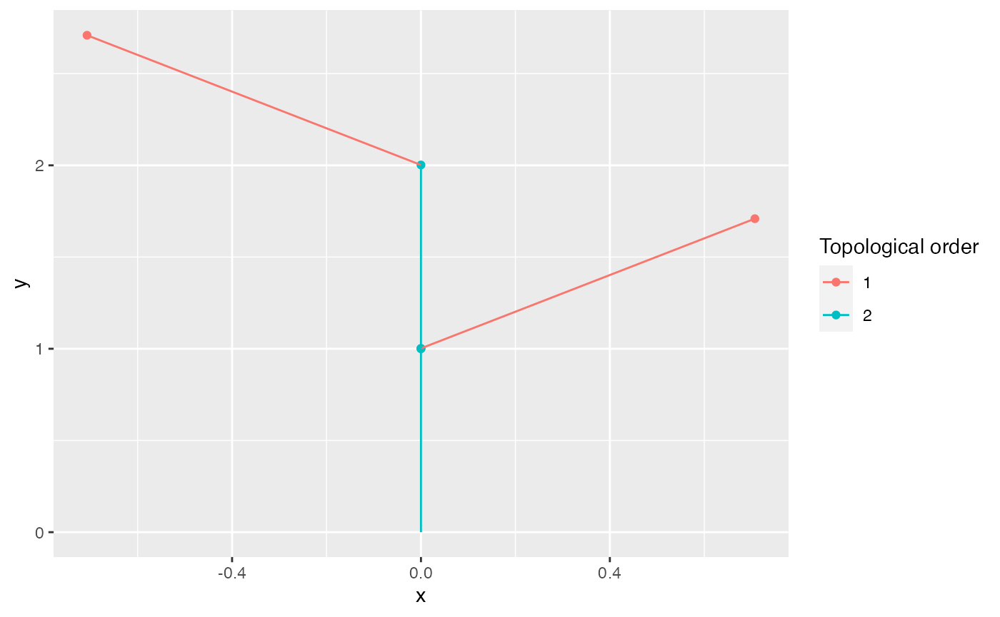

library(XploRer)
Installation
you can install the release version of XploRer from GitHub with:
# install.packages("devtools") devtools::install_github("VEZY/XploRer")
Read a file
Read a simple MTG file:
library(XploRer) MTG = read_mtg("https://raw.githubusercontent.com/VEZY/XploRer/master/inst/extdata/simple_plant.mtg")
The read_mtg() function returns a list of 4:
-
classes: a
data.framethat holds information about the type of nodes used in the MTG (e.g. Internode, Leaf, etc…), the MTG scale for each one, and some more details. Here is the classesdata.framefrom our example:MTG$classes #> SYMBOL SCALE DECOMPOSITION INDEXATION DEFINITION #> 1 $ 0 FREE FREE IMPLICIT #> 2 Individual 1 FREE FREE IMPLICIT #> 3 Axis 2 FREE FREE IMPLICIT #> 4 Internode 3 FREE FREE IMPLICIT #> 5 Leaf 3 FREE FREE IMPLICIT
-
description: a
data.framedefining the potential topological constraints existing between nodes. Here is the descriptiondata.framefrom our example:MTG$description #> LEFT RIGHT RELTYPE MAX #> 1 Internode Internode, Leaf + ? #> 2 Internode Internode, Leaf < ?
-
features: a
data.framelisting all attributes present in the file and their associated type. Here is the featuresdata.framefrom our example:MTG$features #> NAME TYPE #> 1 XX REAL #> 2 YY REAL #> 3 ZZ REAL #> 4 FileName ALPHA #> 5 Length ALPHA #> 6 Width ALPHA #> 7 XEuler REAL
-
MTG: a
data.treestructure defining all nodes, their attributes and their relationships:MTG$MTG #> levelName #> 1 node_1 #> 2 °--node_2 #> 3 °--node_3 #> 4 °--node_4 #> 5 ¦--node_5 #> 6 °--node_6 #> 7 °--node_7
Print/extract variables
The variables / attributes of an MTG can be printed using the print() function on the MTG field, e.g.:
print(MTG$MTG, ".symbol", "Length") #> levelName .symbol Length #> 1 node_1 Scene NA #> 2 °--node_2 Individual NA #> 3 °--node_3 Axis NA #> 4 °--node_4 Internode 4 #> 5 ¦--node_5 Leaf 10 #> 6 °--node_6 Internode 6 #> 7 °--node_7 Leaf 12
The variables can also be extracted in a data.frame() using the functions from the data.tree package e.g.:
data.tree::ToDataFrameTree(MTG$MTG,"Length","Width") #> levelName Length Width #> 1 node_1 NA NA #> 2 °--node_2 NA NA #> 3 °--node_3 NA NA #> 4 °--node_4 4 1 #> 5 ¦--node_5 10 6 #> 6 °--node_6 6 NA #> 7 °--node_7 12 7
Mutate the MTG
The attributes (also known as features or variables) of the MTG can be mutated using mutate_mtg(). It allows to compute new variables, or modify the existing ones.
Compute new variables
mutate_mtg() borrows its syntax from dplyr. We can compute a new variable based on the values of others:
# Import the MTG: filepath= system.file("extdata", "simple_plant.mtg", package = "XploRer") MTG = read_mtg(filepath) # And mutate it by adding two new variables, Length2 and Length3: mutate_mtg(MTG, Length2 = node$Length + 2, Length3 = node$Length2 * 2) print(MTG$MTG, ".symbol", "Length", "Length2", "Length3") #> levelName .symbol Length Length2 Length3 #> 1 node_1 Scene NA NA NA #> 2 °--node_2 Individual NA NA NA #> 3 °--node_3 Axis NA NA NA #> 4 °--node_4 Internode 4 6 12 #> 5 ¦--node_5 Leaf 10 12 24 #> 6 °--node_6 Internode 6 8 16 #> 7 °--node_7 Leaf 12 14 28
We can note two things here:
We use
node$to access the values of a variable inside the MTG. This is done to avoid any conflicts between variables from the MTG, and variables from your environment;Length3uses the results ofLength2before it even exist. This is very powerful to construct several new variables at once. It is allowed thanks to a sequential construction of the variables.
As with dplyr main functions, mutate_mtg() can be used with pipes:
read_mtg(filepath)%>% mutate_mtg(Length2 = node$Length + 2)
This is allowed because the function returns the results invisibly. Note that it is mutating the MTG in place though, so no need to assign the results of mutate_mtg() to a variable.
Use parent values
You can also use functions inside the call. Some helpers are provided by the package to compute variables based on the ancestors or children of the node (see parent(), children() and ancestors()). Here is an example were we define a new variable called Length_parent that is the length of the node’s parent:
mutate_mtg(MTG, Length_parent = parent(node$Length))
parent() is used to get the value of the “Length” variable from the parent of each node.
If we need the values of all ancestors of a node along the tree, we can use ancestors() instead:
mutate_mtg(MTG, total_length = sum(ancestors(Length,self = TRUE),na.rm = TRUE))
Here are the results for both:
print(MTG$MTG,".symbol","Length","Length_parent","total_length") #> levelName .symbol Length Length_parent total_length #> 1 node_1 Scene NA NA 0 #> 2 °--node_2 Individual NA NA 0 #> 3 °--node_3 Axis NA NA 0 #> 4 °--node_4 Internode 4 NA 4 #> 5 ¦--node_5 Leaf 10 4 14 #> 6 °--node_6 Internode 6 4 10 #> 7 °--node_7 Leaf 12 6 22
Use children values
To get the children values of a node, use children(). This function returns the values of a field for all children of a node:
children(attribute = "Length", node = extract_node(MTG, "node_3")) #> node_4 #> 4
It can be used to get e.g. the average length of the children:
mutate_mtg(MTG, children_length = mean(children(node$Length), na.rm = TRUE)) #> Warning in mean.default(children(node$Length), na.rm = TRUE): argument is not #> numeric or logical: returning NA #> Warning in mean.default(children(node$Length), na.rm = TRUE): argument is not #> numeric or logical: returning NA print(MTG$MTG, ".symbol", "Length","children_length") #> levelName .symbol Length children_length #> 1 node_1 Scene NA NaN #> 2 °--node_2 Individual NA NaN #> 3 °--node_3 Axis NA 4 #> 4 °--node_4 Internode 4 8 #> 5 ¦--node_5 Leaf 10 NA #> 6 °--node_6 Internode 6 12 #> 7 °--node_7 Leaf 12 NA
Combine values
We can also make more complex associations. Here is an example were we need the sum of the surface of the section of all children for the nodes:
mutate_mtg(MTG, section_surface = pi * ((node$Width / 2)^2), s_surf_child_sum = sum(children(node$section_surface),na.rm=TRUE))
We first compute the surface of the section of each node, and then we sum the values for all children of the nodes. The s_surf_child_sum variable uses the section_surface variable that was just created before.
Filter by scale or symbol
Introduction on scale and symbol
We can also filter the nodes by scale (i.e. the value of the SCALE column in the MTG classes), or by symbol (i.e. the name of the SYMBOL column), which corresponds to the .scale and .symbol values in the node respectively.
To get all the possible values in an MTG, we can print the classes section:
MTG$classes #> SYMBOL SCALE DECOMPOSITION INDEXATION DEFINITION #> 1 $ 0 FREE FREE IMPLICIT #> 2 Individual 1 FREE FREE IMPLICIT #> 3 Axis 2 FREE FREE IMPLICIT #> 4 Internode 3 FREE FREE IMPLICIT #> 5 Leaf 3 FREE FREE IMPLICIT
To get the actual symbol of a node use the .symbol field on a node, and the .scale field for the scale. Here is an example for the root node of the mtg:
MTG$MTG$.symbol #> [1] "Scene" MTG$MTG$.scale #> NULL
The scale and symbol arguments from the helper functions
parent() and children() implement the scale and symbol arguments to filter by scale or symbol. It allows to tell the function to only consider the scales/symbols passed to this argument, ignoring all others.
For example we can filter the parent node by its symbol using the symbol argument with parent():
parent(attribute = "Length", node = extract_node(MTG, "node_6"), symbol = "Axis") #> node_3 #> NA
Here it returns NA because the first parent is an Internode, and the first node with symbol “Axis” (node_2) has no values for “Length”, see by yourself:
print(MTG$MTG, ".symbol", "Length") #> levelName .symbol Length #> 1 node_1 Scene NA #> 2 °--node_2 Individual NA #> 3 °--node_3 Axis NA #> 4 °--node_4 Internode 4 #> 5 ¦--node_5 Leaf 10 #> 6 °--node_6 Internode 6 #> 7 °--node_7 Leaf 12
By default, the function will search for the first node which satisfies the symbol required by the user and return its value:
parent()looks if the parent node is of the required symbol, if it is, it returns its value, if not, it looks at the parent of the parent. And it does this recursively until either finding an ancestor with the required symbol, or finding the root node (returnsNAin this case).children()looks if the children are of the required symbol. If a child is, it return its value, if not, it will look at the children of the node if any, and repeat the procedure recursively until it finds either a child with the required symbol or a leaf (returnsNAin this case).
An easier way to think about this is that when using the symbol or scale argument, functions work on a different tree with only the symbol(s) or scale(s) required.
The continue argument can be used in parent() and children() functions to disable this default behavior of “climbing” or “descending” the tree. If continue is explicitly set to FALSE, the function returns NA if the first parent is not of the right symbol.
Here is an example with recursive behavior (the default):
children(attribute = Length, node = MTG$MTG$node_2, symbol = "Leaf") #> node_5 node_7 #> 10 12
And without:
children(attribute = Length, node = MTG$MTG$node_2, symbol = "Leaf", continue = FALSE) #> NULL
The function returns NA without the recursive behavior because “node_2” has one child (“node_3”) that is not of the right symbol.
Note that
ancestors()does not have thecontinueargument because it is a recursive function by design. So if an ancestor is not of the right symbol, it just jumps to the next ancestor.
The .symbol and the .scale arguments from mutate_mtg()
mutate_mtg() has a .symbol and a .scale arguments used similarly to the symbol and scale arguments of the other functions. The only difference is that functions inside a mutate_mtg() call will only be applied to the nodes of the chosen scales, while still having access to the parents and children nodes if needed. The .symbol and .scale arguments are applied to all functions inside the mutate_mtg() call.
There can be a benefit in combining those arguments mutate_mtg() and the ones from the other functions in a single call.
Be careful though, if you need a computation at one scale for a variable but at another scale for another, or a variable before it is computed, it is preferable to use multiple calls to mutate_mtg(), possibly chained using a pipe. For example if we need the section surface for the internodes only, and the surface for the leaves only, we would use two separate calls to mutate_mtg() with each its own scale filter:
mutate_mtg(MTG, section_surface = pi * ((node$Width / 2)^2), .symbol = "Internode")%>% mutate_mtg(area = node$Width * node$Length, .symbol = "Leaf") print(MTG$MTG, ".symbol", "Width","section_surface", "area") #> levelName .symbol Width section_surface area #> 1 node_1 Scene NA NA NA #> 2 °--node_2 Individual NA NA NA #> 3 °--node_3 Axis NA NA NA #> 4 °--node_4 Internode 1 0.7853982 NA #> 5 ¦--node_5 Leaf 6 28.2743339 60 #> 6 °--node_6 Internode NA NA NA #> 7 °--node_7 Leaf 7 38.4845100 84
Plotting a plant
Static plot
The plant topology can be plotted using the autoplot() function. This function is implemented by ggplot2 so you’ll need to load this package before-hand:

The function can be used in a pipe, such as:
read_mtg(filepath)%>% mutate_mtg(Length2 = node$Length + 2)%>% autoplot(.)
Interactive plot
The same plot can be rendered as an interactive plot using:
plotly_MTG(MTG)

Interactive plot
plotly_MTG() uses the plotly API under the hood.
It is also possible to add any variable in the tooltip appearing on hover of a node by adding it to the call. For example if we need the Length and the Width of the nodes, we would write:
plotly_mtg(MTG, Length, Width)